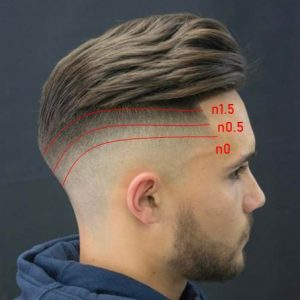

Corte Pelo Fade |
|
Significa ‘degradado’ y consiste en un corte con nuca, patillas y laterales muy cortos o incluso afeitados, volviéndose más largo en la parte superior de la cabeza, que se corta a una altura del número 4.El 'pero' , la tecnica del degradado ha de hacerse muy difuminado, sin trazos ni líneas marcadas, por lo que quien lo hace ha de ser alguien experto y con práctica. |
|
|  | |